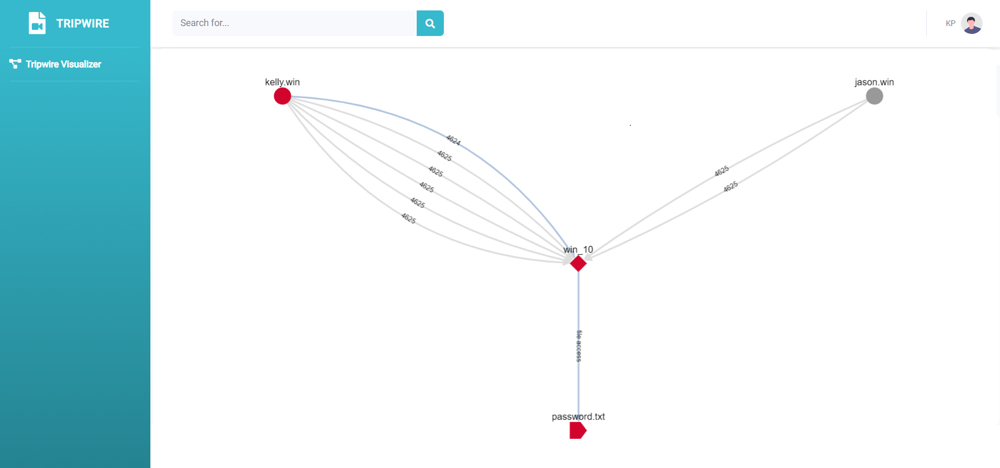

Tripwire is an open source project I developed, drawing inspiration from my prior experience working for an endpoint security vendor and by the strategies of cyber adversaries as depicted in the MITRE ATT&CK framework.
MITRE ATT&CK
The ATT&CK matrix offers a comprehensive depiction of a cyber attack lifecycle, encompassing stages such as initial reconnaissance, network intrusion, establishing a foothold, lateral movement, and ultimately, data exfiltration.
The adversaries described in the ATT&CK matrix are constantly hunting for valuable data, such as credentials and personally identifiable information (PII). Their initial reconnaissance often involves scanning for system vulnerabilities or launching spear-phishing attacks to gain an initial foothold. Once inside the network, they establish persistence and start to move laterally within the network, exploring various paths and methods to access the desired information. This lateral movement frequently involves techniques like Pass the Hash or Pass the Ticket, which exploit legitimate credentials to access additional systems.
The adversaries also employ methods such as living off the land (LotL) and leveraging native tools available on the system to remain undetected. Eventually, once they've amassed the information they seek, they proceed to the exfiltration phase. Here, they often use sophisticated methods, like using encrypted channels or DNS tunneling, to securely transmit the data back to their own servers, leaving behind minimal traces of their activities. It's critical to note that these malicious actors are continually evolving, updating their techniques and tools to circumvent detection and prevention mechanisms. Thus, the MITRE ATT&CK matrix is not a static framework but a dynamic, continually updated resource, helping cybersecurity professionals anticipate and mitigate emerging threats effectively.
Tripwire Overview
Inspired by these tactics, especially the phase of lateral movement, Tripwire sets up deceptive 'tripwires' or decoys that mimic valuable data within the network. When an attacker interacts with these decoys, Tripwire logs the interaction, yielding crucial information about the attacker's actions and strategies. This process enables security teams to gain valuable insights into the attacker's tactics, techniques, and procedures (TTPs), thereby aiding in detection and response efforts.
By incorporating insights from the MITRE ATT&CK framework and understanding the tendencies of attackers, Tripwire presents a potent tool to counter these persistent threats and safeguard valuable organizational data.
The tool focuses primarily for on-prem corporate windows environments, specifically Windows 8/8.1/10 platforms. For local development purposes, it requires Go version 1.17.6+.
Tripwire Visualizer
Tripwire also provides a visual representation of potential security breaches, showing the movements of rogue users within a network. This can be incredibly valuable for Incident Response (IR) and Security Operations Center (SOC) teams, as it can provide visual evidence that can be used in further investigations as shown in Figure 1 below.
In addition to this, Tripwire incorporates Windows event logs to provide more contextual data about these interactions. Event logs can provide information about what process was involved in opening the file, the account used, and the domain they were in. This additional context can be incredibly valuable when investigating an incident, as it provides a more complete picture of the attacker's actions. For instance, with event id 4663, it's possible to determine what process was involved in opening the file, possibly what account was used, and the domain they are in. With event id 4624 and 4625, it becomes possible to see when they've logged into that account and from which machine, even if it's not coming from the compromised host.
Figure 1: Lateral movement that leads to tripwire(decoy) access.
How Red and Blue Teams Can Benefit
Red Teams
For red teams, who are tasked with testing an organization's defenses, Tripwire can be an excellent tool for understanding potential vulnerabilities within a system. By planting tripwires (decoys) and monitoring how they are accessed, red teams can simulate the actions of an attacker. The visualizer can help to demonstrate the paths an attacker might take, highlighting areas where defenses could be improved.
Blue Teams
Blue teams, who focus on defending against attacks, can also benefit significantly from Tripwire. By planting tripwires and setting up alerts for unauthorized access, blue teams can identify potential security breaches early on. The additional context provided by windows event logs can be incredibly valuable in investigations, offering insights into which process was involved in accessing the file, the account used, and the domain they are in.
Conclusion
By leveraging attacker movements and providing a rich context of their actions, Tripwire empowers security teams with the insights they need to combat these threats effectively. Whether it's understanding a rogue user's pathway within a network or making sense of complex Windows event logs, Tripwire is there to illuminate the dark corners of cyber intrusions. As we continue to evolve in the digital age, tools like Tripwire will play a pivotal role in shaping our defense strategies, ensuring that we stay one step ahead in the game of cybersecurity.
However, the project is still in its early stages. There's still a ton of work that needs done such as separating the project into a standard client and server, adding more controls, and support for other operating systems.